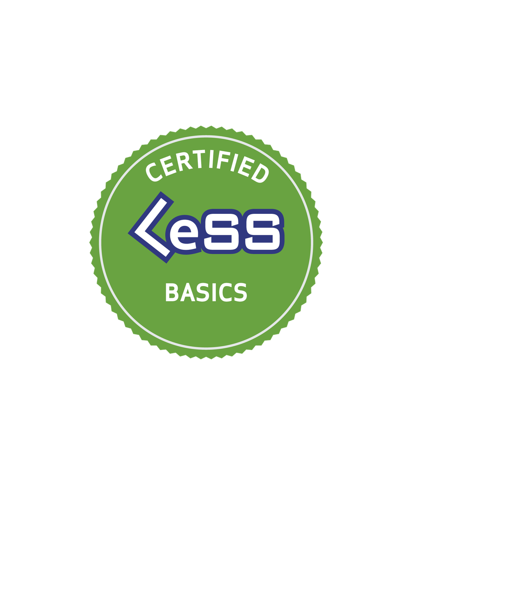
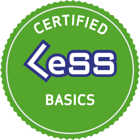
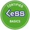

Certified Large-Scale
Scrum Basics Training
Learn how to descale your organization and do Scrum
with multiple teams. 100% Interactive

Learn how to descale your organization and do Scrum
with multiple teams. 100% Interactive
Introduction
Quickly delivering value and innovating in ever-faster cycle times has become a key differentiator between good and great enterprises. Large product-development organizations are turning to agile principles and large-scale Scrum to sustainably deliver that innovation at a fast pace.
The key questions many large product development organizations face are:
How to apply what works well on a small scale to large scale developments?
What’s the design of an organization that optimizes for learning, agility and customer value?
Can I redesign my organization to create the environment to succeed in the long run?
Large-Scale Scrum (LeSS) is to organizations what Scrum is to teams: a simple, powerful, large-scale product development framework designed to evolve into something that fits perfectly within any unique context. LeSS builds on top of Scrum principles such as empiricism, cross-functional, self-managing teams, and provides a framework to apply them at scale. It presents simple structural rules and guidelines on how to adopt Scrum in large product development.
The Course
Explain what is LeSS and what LeSS is not.
Explain the LeSS roles and their purpose.
Explain how LeSS is a Scrum-based approach to scaling.
Explain the dynamics of component teams vs. feature teams.
Summarize what impact this has on organizational design (structures, policies, etc.).
Understand how your current organizational design influences the agility of your organization.
Understand whether and how your organization can benefit from implementing LeSS.
Explain how LeSS scales over approx. 8 teams Explain how LeSS scales over approx. 8 teams.
What’s special about this course?
This course has been designed from the ground up for a great remote experience with techniques from “Training from the BACK of the Room” by Sharon Bowman and “Learning How to Learn” by Barbara Oakley, PhD. It will allow you to take in information in a multisensory way (hearing, seeing, discussing, writing, reflecting and teaching it to others) and engage in an active review of your knowledge. At the end of the course, you will create action plans on how to use your new skills in your organization.
The course is limited to 10 participants in order to allow a deep level of engagement and learning.
The course consists of 6 sessions of up to 90 minutes each, spread out over 3 days. All participants will need to participate actively in the sessions with interaction through tools and webcam in order to get the CLB certification.
Special text 1
Special text 2
Special text 3
Course Times
Wednesday, April 22nd
9:30 - 10:30 CET
•
11:00 - 12:30 CET
Thursday, April 23rd
9:30 - 10:30 CET
•
11:00 - 12:30 CET
Friday, April 24th
9:30 - 10:30 CET
•
11:00 - 13:00 CET
Certification
Certified LeSS Basics Certificate
Access to many LeSS resources
8 Scrum Education Units
At the end of the course, you will receive a CLB certification and an account on less.works. You will also get an in-depth overview of to major learning resources at less.works, including the sections: Why LeSS?, Introduction to LeSS (chapter 2 from book 3), the rules, the online videos & books chapters.
In addition, after attending all 6 sessions, you will be able to claim up to 8 SEUs (Scrum Education Units) under Category C, towards Scrum Alliance CSP (Certified Scrum Professional) credential.
Target Audience
This course is for everyone in product development: Scrum Masters and Agile Practitioners, Team and Organizational Coaches, Organizational Leaders and Senior Managers, Product Owners and Stakeholders, Software Engineers, Hands-on Technologists, and others.
Agenda
The following topics will be covered in this course:
Why LeSS
LeSS and Scrum (what do they have in common and what is different)
Component Teams vs. Feature Teams
The LeSS roles
The LeSS events
The LeSS principles
LeSS huge
Prerequisites
Prerequisites 1
Prerequisites 2
Prerequisites 3
The only prerequisite to the course is basic Scrum knowledge. That can be picked up by attending a Certified Scrum Master or a Professional Scrum Master course, or thoroughly reading Scrum introduction material such as the Scrum Primer and practicing Scrum.
You need a stable and fast internet connection, a webcam, a headset and an environment where you can concentrate as well as interact with others online as needed.
Recommended Preparation
Participants should review Scrum introduction material such as the Scrum Primer. Another great preparation for this course is the Scrum Test on less.works. It’s strongly encouraged to do this test before attending the course.
About the Trainer
Robert is one of 20 certified LeSS Trainers globally and one of the few with hands-on experience in LeSS and LeSS Huge. As a change agent for 15+ years consulting and coaching, he has worked with over 30 companies, including DAX-listed global brands such as Adidas, BMW, BP, Dr. Oetker, Henkel, Hilti, Hugo Boss, SAP, Volkswagen, and ZF.
From 2015 to 2016 he led a LeSS adoption at a Global Player in the Software Industry, scaling development from 3 to 7 teams and coaching the development and the management team on how to lead a scaled agile organization. In 2018 he contributed to significant improvements in product delivery at one of the biggest LeSS Huge adoptions in the world at BMW AG. Working with over 30 teams, including large groups of over 400 employees, he led them to deliver bi-weekly product increments consisting of hardware and software.
Read More